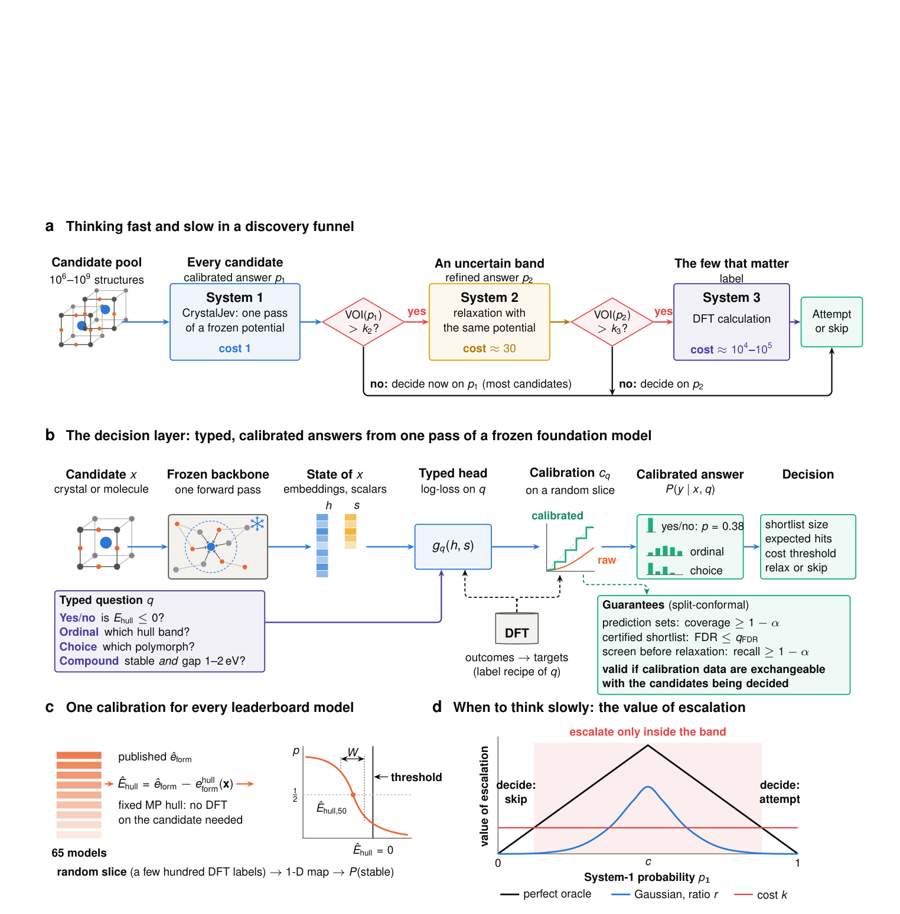
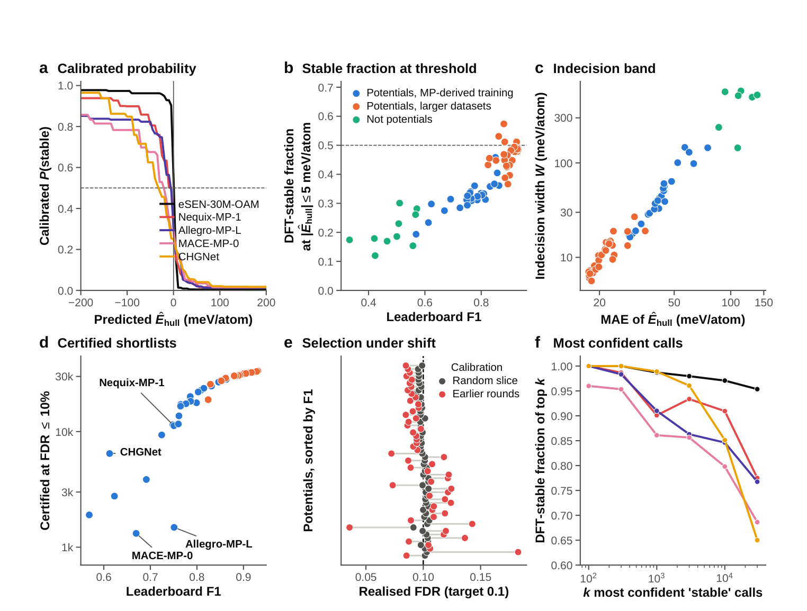
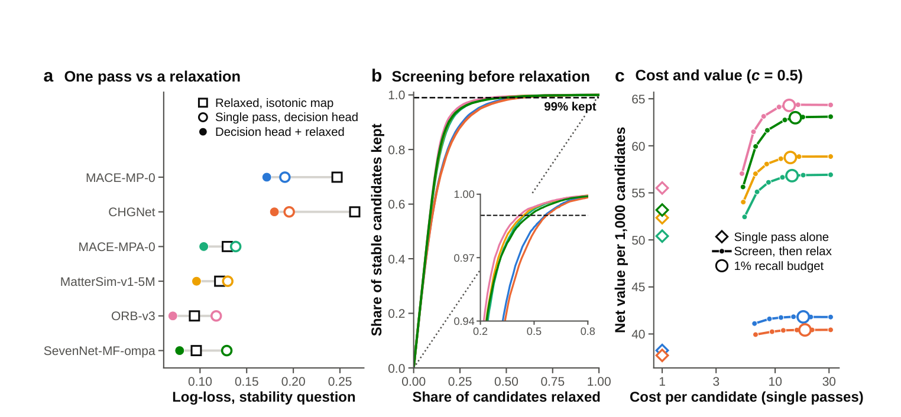
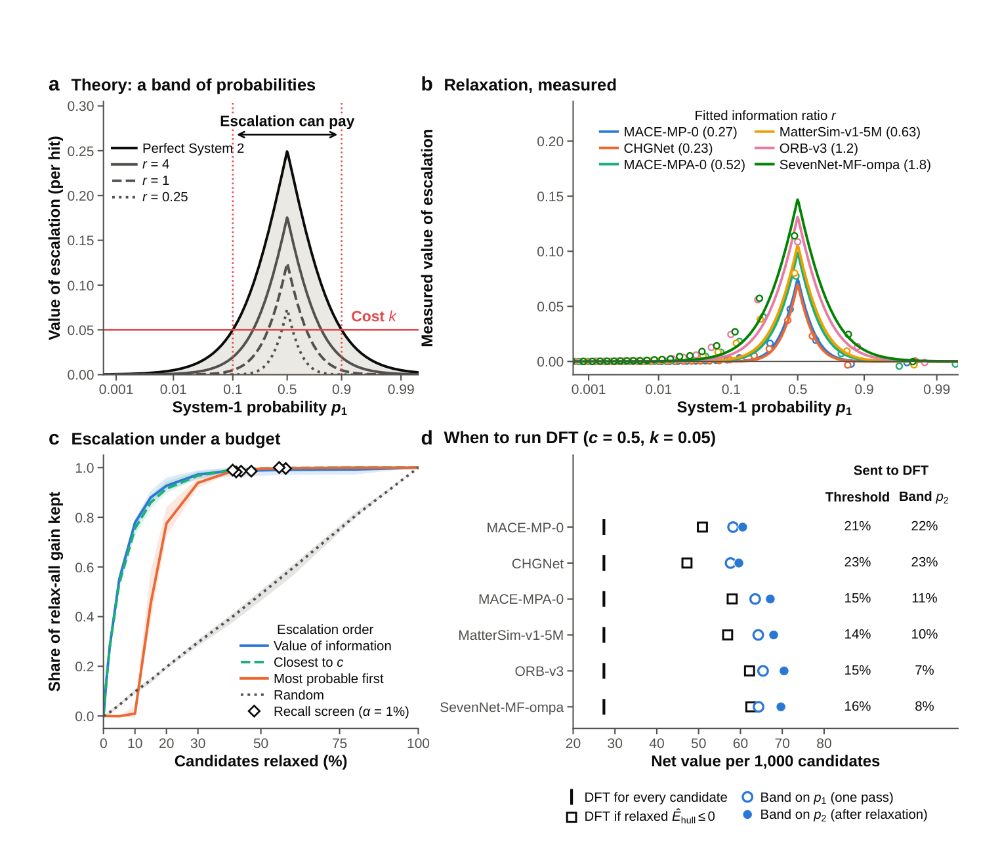
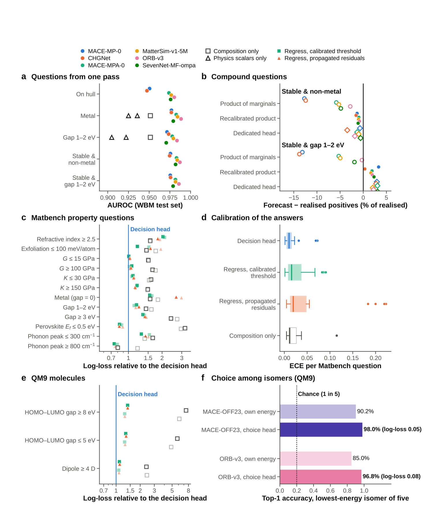
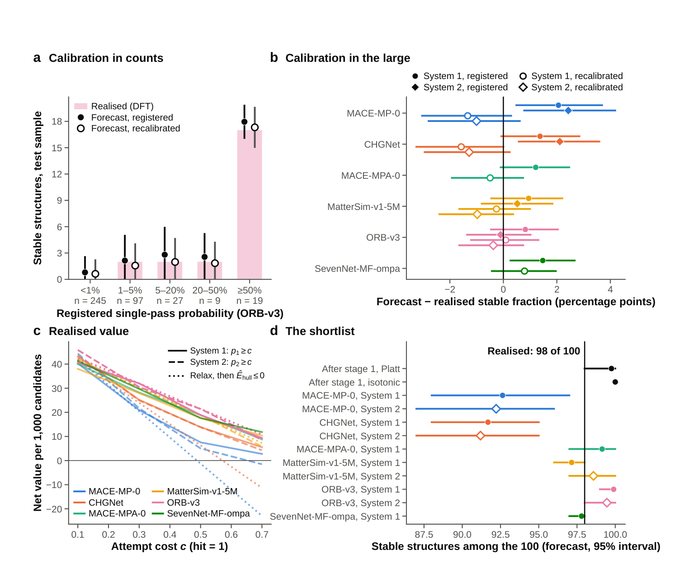

CrystalJev：用一次原子计算回答材料问题，再按信息价值分配慢计算
论文原文 ↗论文：CrystalJev: thinking fast and slow with atomistic foundation models for materials discovery，Peng Kang、Zhen Li、Yu Liu、Lei Zheng、Huibin Xu，2026。arXiv｜
材料初筛需要的是决策，而不总是一轮完整模拟
原子基础模型已经能处理数百万个假想晶体。通常流程是：让机器学习势反复移动原子，完成结构优化，再根据预测能量判断候选是否值得交给密度泛函理论 DFT。一次优化大约要做几十次模型前向计算，而研究者最终可能只需要一个简单答案：这个候选稳定的概率是多少？带隙是否落在目标窗口？追加计算是否值得？
CrystalJev 将冻结的原子基础模型读作一个快速决策者。对每个未优化结构只运行一次模型，读取内部表示和物理量，再用轻量读出层直接回答指定问题。输出经过校准的概率可以估计名单命中数、设置筛选阈值，还能用于决定哪些候选需要“慢思考”——进一步优化或做 DFT。
从未优化晶体到可解释的概率
以 WBM 晶体候选为例，输入是通过化学替换得到的初始晶胞，包含元素、坐标和晶格。作者先对该结构运行一次冻结的势模型，读取能量输出前的逐原子内部表示，并汇总成整个结构的特征。内部表示浓缩了原子邻域和化学环境信息；再加入单点形成能、凸包距离、力和应力统计等物理标量，便形成问题读出层的输入。
稳定性问题的标签来自 DFT 优化后的形成能与固定 Materials Project 参考凸包的比较。凸包表示同一总组成下已知竞争相及其组合的低能包络；候选位于其上方的距离越大，分解倾向越强。作者用已有 DFT 结果训练梯度提升树等小模型，让它直接预测稳定标签的概率，而基础势的参数保持不变。这样，训练目标与“筛出稳定候选”的决策直接对应。
原始概率还需校准：若一组候选都被赋予 0.3，希望其中约 30% 满足目标标签。作者在独立随机样本上学习简单映射，把模型分数调整为这种频率含义。主要比较按化学体系隔离训练与测试，用训练体系学习读出层，再用目标候选总体的随机样本校准。训练后，一份名单的预计稳定数可由各候选概率求和得到。

原图 Fig.1。一次势模型计算产生结构特征，问题读出层将其转换为校准概率；结构优化与 DFT 构成逐级增加信息的计算层。需要追加计算的重点是决策可能改变的候选。
校准后的概率还可接上保形预测：根据校准样本中的实际误差，为筛选名单设置有限样本的漏检率或错误发现率控制。例如，研究者可要求在随机校准与待筛候选来自相同总体的条件下，将名单中的预期错误比例控制在指定水平。
为什么能量阈值需要重新解释
作者分析 Matbench Discovery 的 65 个模型发现，“预测凸包距离为零”没有统一的概率含义。模型误差和候选总体共同决定越过这个阈值的结构有多少真正稳定：在零点附近，仅用 MP 派生数据训练的势，实际稳定比例为 0.19–0.46，更大数据训练的势为 0.37–0.57。即使排行榜 F1 接近，在 10% 错误发现率约束下能选出的名单大小仍可相差 7.8 倍。

原图 Fig.2。a 展示预测凸包距离与校准稳定概率的关系；d 比较相近 F1 下可认证的候选数量；e 展示校准总体变化怎样影响筛选结果。
概率读出把这种隐含关系直接学出来。作者在同一个势模型下比较“未优化结构的一次计算”和“优化后的能量”，并用对数损失评价概率质量。对数损失既奖励正确概率，也惩罚对错误答案过度自信，越低越好。MACE-MP-0 的一次计算读出为 0.191，优化能量校准为 0.247；CHGNet 分别为 0.196 与 0.266。对较新的势，优化后预测更好，但一次计算已接近它；再把优化能量加入原有特征，六个模型的结果都进一步改善。

原图 Fig.3。a 比较一次计算、优化能量和组合特征的概率质量；b 展示预筛比例与稳定结构保留比例；c 将计算成本与决策收益联系起来。
这意味着势模型内部表示已包含许多优化能量尚未显式表达的信息。经过已有标签训练后，一次前向计算以约三十分之一的优化成本，作出接近完整优化的判断。若目标是尽量保留稳定结构，保形预筛可只将 41%–58% 的候选送去优化，同时保留至少 98.8% 的稳定结构。
慢计算应当去哪里：看它能否改变行动
概率很高的候选，即使追加计算，往往仍会继续研究；概率很低时，更多计算也常常不改变跳过的决定。信息价值 VOI 因此评价的是：追加信息后，能够采取更好行动而增加多少期望收益。
作者将一次成功的价值归一化为 1，研究某候选的成本记为 c，当前成功概率记为 p。直接行动的规则是 p 大于 c。若再付出计算成本 k，只有计算可能改变这一决定、且收益超过 k，才值得进行。方法先在校准样本上取得优化后的预测，学习不同初始概率区域通常能从优化中获得多少收益，再按这个信息价值安排优化顺序。
在 c=0.5 的比较中，只优化 10% 的候选就保留了全部优化所带来增量净收益的 78%；优化 20% 时保留 93%。若按“最可能稳定优先”安排同样预算，相应只有 1% 和 78%。前一种策略将算力留给尚未定论的候选，后一种常把算力用于已经很确定的决定。

原图 Fig.4。a 解释追加计算的收益与成本；b、c 比较不同策略在相同预算下保留的增量收益；d 展示 DFT 分配规则。图中的成本相对于一次成功的价值归一化。
同一读出层也能回答电子、力学和分子问题
方法的输出由问题定义，而不必总是一个能量。作者把标签换成金属性、1–2 eV 带隙窗口、力学性质阈值和同组成结构的优选。在七个 Matbench 数据集的 12 个筛选问题中，两种势形成的 24 个问题—模型组合里，有 20 个的直接决策读出优于“先回归性质、再设阈值”的基线。
联合问题也可以直接训练，例如“既稳定、又具有目标带隙”。这样模型学习两种性质的共同发生关系。在 QM9 分子中，对五个同分子式异构体选择最低能者，加入学到的能量修正后，MACE-OFF23 的首选准确率从 90.2% 提高到 98.0%，ORB-v3 从 85.0% 提高到 96.8%。这些例子展示了从冻结原子表示中读取任务答案的通用性。

原图 Fig.5。a、b 是晶体电子性质及联合问题；c、d 比较决策读出与回归基线；e、f 展示分子异构体的能量选择。G 和 K 分别表示剪切模量与体积模量。
新 DFT 测试检验概率能否迁移
作者进一步通过离子替换提出 8,000 个组成未出现在 MP 和 WBM 中的新候选，并事先登记预测及取样方案，安排 700 次 DFT：随机样本用于重新校准和独立测试，另取 ORB-v3 最看好的 100 个候选。最终随机测试得到 397 个标签，其中 23 个稳定，稳定比例为 5.8%。
仅使用已有 WBM 数据校准的单次计算预测，对这一稳定比例最多高估 2.1 个百分点。ORB-v3 原本预计测试样本中有 26.3 个稳定候选，使用新的随机校准样本调整后预计 23.3 个，实际为 23 个。精选的 100 个候选中，98 个满足 DFT 稳定标签。前一个比较检验整个新候选总体上的概率含义，后一个比较展示按概率优选的命中情况。

原图 Fig.6。a 比较概率区间中的预计与实际稳定数量；b 展示总体稳定比例的预测偏差；c 比较净收益；d 展示精选候选的预计与实际命中数。
CrystalJev 的新增能力，是让原子基础模型同时支持快速回答、概率化筛选和计算预算分配。一次原子计算不再只是漫长优化的第一步，而可以先形成与研究问题直接对应的判断；结构优化和 DFT 则在有望改善决定的位置补充信息。这样的分工把模型表示、统计校准与实际材料筛选连接成了一套决策流程。
原始摘要完整中文翻译
原子基础模型对数百万种假想材料进行初筛，但它们被当作缓慢的模拟器使用，其经过阈值判定的能量输出被直接采信。更合适的方式是把它们视为快速决策者。CrystalJev 对每个未优化结构只查询一次冻结的原子间势，便以经过校准的概率、有限样本保证以及何时应当进行慢思考的规则，回答具有明确类型的问题。对 Matbench Discovery 的 65 个模型进行分析表明，一次“稳定”判断实际上是隐含的概率，其含义由模型误差和候选总体共同解释。训练完成后，一次前向计算便能以结构优化三十分之一的成本，作出几乎同样好的决策；信息价值理论则只把较慢计算分配到决策可能发生改变的地方。同一个决策层也能回答电子、力学和分子问题。在一项事先登记、包含 700 次新密度泛函计算的前瞻性测试中，仅用已有数据校准的单次计算预测，对未见候选的稳定比例（5.8%）最多高估了 2.1 个百分点。